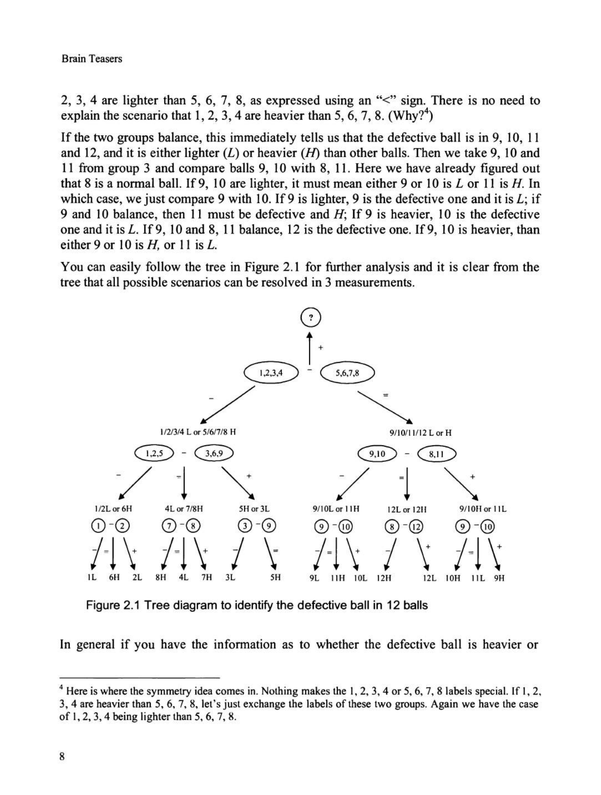
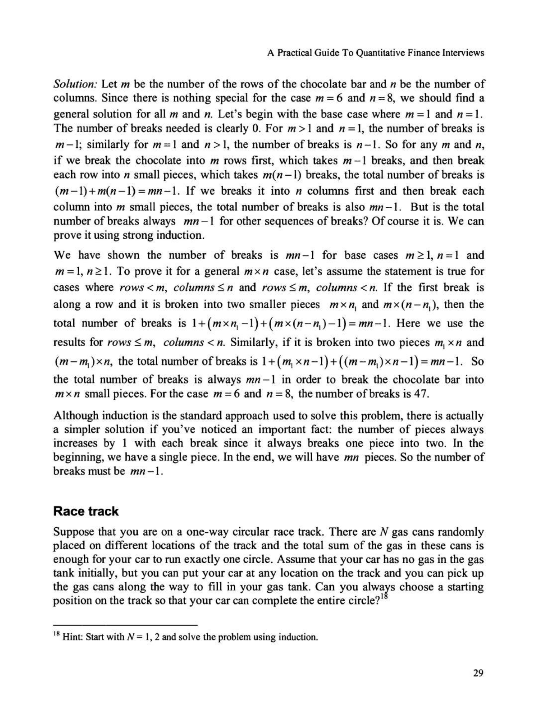
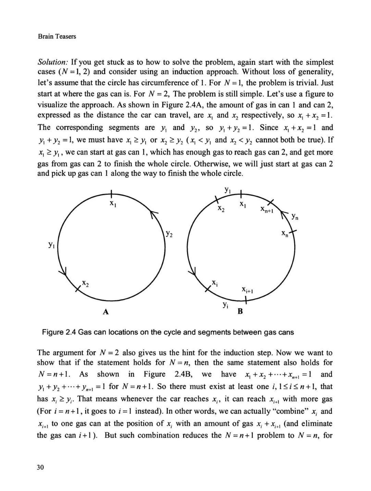
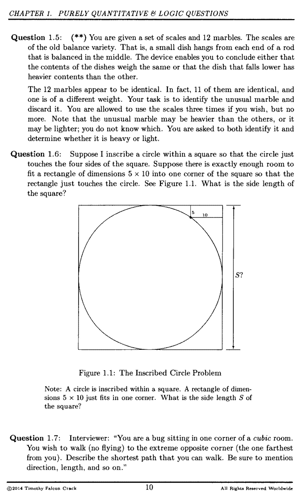
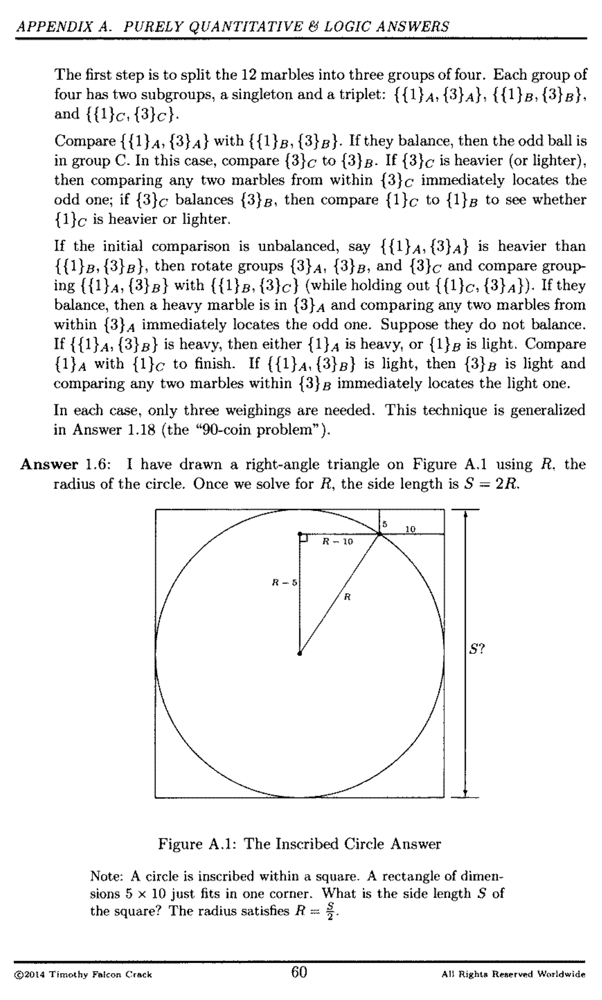

01. Benchmark Questions#
This notebook previews the questions used in the quant-finance LLM benchmark. Questions are drawn from two source books:
Green Book – A Practical Guide to Quantitative Finance Interviews (Zhou)
Heard on the Street – Heard on the Street (Crack)
There are two question types:
Text-only – pure text questions (logic, probability, options, etc.)
Visual – questions that include one or more figures scanned from the textbook
from pathlib import Path
import pandas as pd
from IPython.display import Image, Markdown, display
from settings import config
DATA_DIR = config("DATA_DIR")
CACHE_DIR = DATA_DIR / "questions_cache"
TEXT_DIR = CACHE_DIR / "text_only"
VISUAL_DIR = CACHE_DIR / "visual"
text_manifest = pd.read_csv(TEXT_DIR / "manifest.csv")
visual_manifest = pd.read_csv(VISUAL_DIR / "manifest.csv")
text_manifest["question_type"] = "text_only"
visual_manifest["question_type"] = "visual"
all_questions = pd.concat([text_manifest, visual_manifest], ignore_index=True)
print(
f"Total questions: {len(all_questions)} "
f"({len(text_manifest)} text-only, {len(visual_manifest)} visual)"
)
Total questions: 91 (63 text-only, 28 visual)
Question Distribution#
display(Markdown("### By Source and Question Type"))
display(pd.crosstab(all_questions["source_book"], all_questions["question_type"], margins=True))
By Source and Question Type
| question_type | text_only | visual | All |
|---|---|---|---|
| source_book | |||
| green_book | 43 | 6 | 49 |
| heard_on_the_street | 20 | 22 | 42 |
| All | 63 | 28 | 91 |
display(Markdown("### By Chapter"))
display(
all_questions.groupby("chapter")
.size()
.reset_index(name="count")
.sort_values("count", ascending=False)
)
By Chapter
| chapter | count | |
|---|---|---|
| 1 | Ch 2 | 36 |
| 0 | Ch 1: Purely Quantitative & Logic Questions | 23 |
| 4 | Ch 4: Statistics Questions | 11 |
| 2 | Ch 2: Derivatives Questions | 8 |
| 3 | Ch 4 | 5 |
| 6 | Ch 6 | 4 |
| 5 | Ch 5 | 3 |
| 7 | Ch 7 | 1 |
display(Markdown("### By Difficulty"))
difficulty = all_questions["difficulty"].fillna("").replace("nan", "")
difficulty = difficulty.replace("", "unrated")
display(difficulty.value_counts().reset_index(name="count").rename(columns={"index": "difficulty"}))
By Difficulty
| difficulty | count | |
|---|---|---|
| 0 | unrated | 49 |
| 1 | * | 38 |
| 2 | ** | 4 |
Full Question Index#
index_df = all_questions[
["question_id", "question_type", "title", "source_book", "chapter", "difficulty", "answer"]
].copy()
index_df["answer"] = index_df["answer"].str[:80]
display(index_df)
| question_id | question_type | title | source_book | chapter | difficulty | answer | |
|---|---|---|---|---|---|---|---|
| 0 | q001 | text_only | Screwy pirates | green_book | Ch 2 | NaN | Pirates 1 and 3 get 1 coin each; pirate 5 keep... |
| 1 | q002 | text_only | Tiger and sheep | green_book | Ch 2 | NaN | The sheep will not be eaten (100 is even) |
| 2 | q003 | text_only | River crossing | green_book | Ch 2 | NaN | 17 minutes |
| 3 | q004 | text_only | Birthday problem | green_book | Ch 2 | NaN | September 1 |
| 4 | q005 | text_only | Card game | green_book | Ch 2 | NaN | Do not play; the expected payoff is negative f... |
| ... | ... | ... | ... | ... | ... | ... | ... |
| 86 | q024 | visual | HOTS Q4.11 | heard_on_the_street | Ch 4: Statistics Questions | * | Probability of meeting = 7/16 (with 15-minute ... |
| 87 | q025 | visual | HOTS Q4.35 | heard_on_the_street | Ch 4: Statistics Questions | * | Probability of forming a polygon from n pieces... |
| 88 | q026 | visual | HOTS Q4.36 | heard_on_the_street | Ch 4: Statistics Questions | ** | Expected length of longest piece = 11/18; shor... |
| 89 | q027 | visual | HOTS Q4.37 | heard_on_the_street | Ch 4: Statistics Questions | * | Probability both children are girls given one ... |
| 90 | q028 | visual | HOTS Q4.39 | heard_on_the_street | Ch 4: Statistics Questions | * | Probability of meeting = 7/16; area formula: 1... |
91 rows × 7 columns
Sample Text-Only Questions#
Below are a few representative text-only questions. Each is shown in two ways:
Rendered – the markdown is rendered directly (note that some math notation may appear garbled due to OCR artifacts from the original PDFs).
Raw source – the underlying markdown file content (click to expand).
The reference answer from the curated manifest CSV is shown at the end.
def display_question(row, question_dir):
"""Display a single question: rendered markdown, raw source, and reference answer."""
md_path = question_dir / row["question_file"]
raw_text = md_path.read_text(encoding="utf-8")
display(Markdown(f"### {row['question_id']}: {row['title']}"))
display(
Markdown(
f"**Source:** {row['source_label']} | "
f"**Chapter:** {row['chapter']} | "
f"**Difficulty:** {row.get('difficulty') or 'unrated'}"
)
)
# Rendered markdown
display(Markdown(raw_text))
# Raw source (collapsible)
display(
Markdown(
f"<details><summary>Raw markdown source</summary>\n\n"
f"```\n{raw_text}\n```\n</details>"
)
)
# Reference answer
display(Markdown(f"> **Reference answer:** {row['answer']}"))
sample_text_ids = ["q001", "q033", "q039", "q060"]
for _, row in text_manifest[text_manifest["question_id"].isin(sample_text_ids)].iterrows():
display_question(row, TEXT_DIR)
q001: Screwy pirates
Source: A Practical Guide to Quantitative Finance Interviews (Zhou) | Chapter: Ch 2 | Difficulty: nan
Screwy pirates
Source: A Practical Guide to Quantitative Finance Interviews (Zhou) Chapter: Ch 2 Section: 2.0
Five pirates looted a chest full of 100 gold coins. Being a bunch of democratic pirates, they agree on the following method to divide the loot: The most senior pirate will propose a distribution of the coins. All pirates, including the most senior pirate, will then vote. If at least 50% of the pirates (3 pirates in this case) accept the proposal, the gold is divided as proposed. If not, the most senior pirate will be fed to shark and the process starts over with the next most senior pirate … The process is repeated until a plan is approved. You can assume that all pirates are perfectly rational: they want to stay alive first and to get as much gold as possible second. Finally, being blood-thirsty pirates, they want to have fewer pirates on the boat if given a choice between otherwise equal outcomes. How will the gold coins be divided in the end?
Raw markdown source
# Screwy pirates
**Source:** A Practical Guide to Quantitative Finance Interviews (Zhou)
**Chapter:** Ch 2
**Section:** 2.0
Five pirates looted a chest full of 100 gold coins. Being a bunch of democratic pirates,
they agree on the following method to divide the loot:
The most senior pirate will propose a distribution of the coins. All pirates, including the
most senior pirate, will then vote. If at least 50% of the pirates (3 pirates in this case)
accept the proposal, the gold is divided as proposed. If not, the most senior pirate will be
fed to shark and the process starts over with the next most senior pirate ... The process is
repeated until a plan is approved. You can assume that all pirates are perfectly rational:
they want to stay alive first and to get as much gold as possible second. Finally, being
blood-thirsty pirates, they want to have fewer pirates on the boat if given a choice
between otherwise equal outcomes.
How will the gold coins be divided in the end?
Reference answer: Pirates 1 and 3 get 1 coin each; pirate 5 keeps 98 coins
q033: Coin toss game
Source: A Practical Guide to Quantitative Finance Interviews (Zhou) | Chapter: Ch 4 | Difficulty: nan
Coin toss game
Source: A Practical Guide to Quantitative Finance Interviews (Zhou) Chapter: Ch 4 Section: 4.0
Two gamblers are playing a coin toss game. Gambler A has (n + 1) fair coins; B has n fair coins. What is the probability that A will have more heads than B if both flip all their coins?2
Raw markdown source
# Coin toss game
**Source:** A Practical Guide to Quantitative Finance Interviews (Zhou)
**Chapter:** Ch 4
**Section:** 4.0
Two gamblers are playing a coin toss game. Gambler A has (n + 1) fair coins; B has n
fair coins. What is the probability that A will have more heads than B if both flip all their
coins?2
Reference answer: P(A gets more heads than B) = 1/2 by symmetry
q039: Put-Call Parity
Source: A Practical Guide to Quantitative Finance Interviews (Zhou) | Chapter: Ch 6 | Difficulty: nan
Put-Call Parity
Source: A Practical Guide to Quantitative Finance Interviews (Zhou) Chapter: Ch 6 Section: 6.0
Put-call parity: c + K-rr = p + S - D, where the European call option and the European put option have the same underlying security, the same maturity T and the same strike price K. Since p 2:: 0, we can also derive boundaries for c, S - D - Ke-rr c S, from the put-call parity. For American options, the equality no longer holds and it becomes two inequalities: S-D-K:::; S-K-rr. Can you write down the put-call parity for European options on non-dividend paying stocks and prove it? 138 —PAGE_BREAK— A Practical Guide To Quantitative Finance Interviews
Raw markdown source
# Put-Call Parity
**Source:** A Practical Guide to Quantitative Finance Interviews (Zhou)
**Chapter:** Ch 6
**Section:** 6.0
Put-call parity: c + K-rr = p + S - D, where the European call option and the European
put option have the same underlying security, the same maturity T and the same strike
price K. Since p 2:: 0, we can also derive boundaries for c, S - D - Ke-rr c S, from
the put-call parity.
For American options, the equality no longer holds and it becomes two inequalities:
S-D-K:::; S-K-rr.
Can you write down the put-call parity for European options on non-dividend paying
stocks and prove it?
138
---PAGE_BREAK---
A Practical Guide To Quantitative Finance Interviews
Reference answer: c + Ke^(-rT) = p + S for European options on non-dividend-paying stocks
q060: HOTS Q4.2
Source: Heard on the Street (Crack) | Chapter: Ch 4: Statistics Questions | Difficulty: *
HOTS Q4.2
Source: Heard on the Street (Crack) Chapter: Ch 4: Statistics Questions Difficulty: *
Consider the following game. The player tosses a die once only. The payoff is $1 for each “dot” on the upturned face. Assuming a fair die, at what level should you set the ticket price for this game?
Raw markdown source
# HOTS Q4.2
**Source:** Heard on the Street (Crack)
**Chapter:** Ch 4: Statistics Questions
**Difficulty:** *
Consider the following game. The player tosses a die once only. The payoff is $1 for each “dot” on the upturned face. Assuming a fair die, at what level should you set the ticket price for this game?
Reference answer: Expected payoff = $3.50; charge $3.50 plus a profit margin
Sample Visual Questions#
Visual questions include one or more PNG figures scanned from the source textbooks. Below are a few examples showing the question text alongside the associated images.
def display_visual_question(row, question_dir):
"""Display a visual question with its associated images."""
display_question(row, question_dir)
if pd.notna(row.get("images", "")) and row["images"]:
image_files = str(row["images"]).split(";")
for img_file in image_files:
img_path = question_dir / img_file.strip()
if img_path.exists():
display(Markdown(f"**Figure:** `{img_file.strip()}`"))
display(Image(filename=str(img_path), width=600))
sample_visual_ids = ["q001", "q004", "q007"]
for _, row in visual_manifest[visual_manifest["question_id"].isin(sample_visual_ids)].iterrows():
display_visual_question(row, VISUAL_DIR)
q001: Defective ball
Source: A Practical Guide to Quantitative Finance Interviews (Zhou) | Chapter: Ch 2 | Difficulty: nan
Defective ball
Source: A Practical Guide to Quantitative Finance Interviews (Zhou) Chapter: Ch 2 Section: 2.0
You have 12 identical balls. One of the balls is heavier OR lighter than the rest (you don’t know which). Using just a balance that can only show you which side of the tray is heavier, how can you determine which ball is the defective one with 3 measurements?3
Raw markdown source
# Defective ball
**Source:** A Practical Guide to Quantitative Finance Interviews (Zhou)
**Chapter:** Ch 2
**Section:** 2.0
You have 12 identical balls. One of the balls is heavier OR lighter than the rest (you
don't know which). Using just a balance that can only show you which side of the tray is
heavier, how can you determine which ball is the defective one with 3 measurements?3
Reference answer: Divide 12 balls into 3 groups of 4; systematic weighing tree identifies defective ball in 3 measurements
Figure: q001-img01.png
{kind=link}

q004: Race track
Source: A Practical Guide to Quantitative Finance Interviews (Zhou) | Chapter: Ch 2 | Difficulty: nan
Race track
Source: A Practical Guide to Quantitative Finance Interviews (Zhou) Chapter: Ch 2 Section: 2.0
Suppose that you are on a one-way circular race track. There are N gas cans randomly placed on different locations of the track and the total sum of the gas in these cans is enough for your car to run exactly one circle. Assume that your car has no gas in the gas tank initially, but you can put your car at any location on the track and you can pick up the gas cans along the way to fill in your gas tank. Can you choose a starting position on the track so that your car can complete the entire circle?1 18 Hint: Start with N = l, 2 and solve the problem using induction. 29 —PAGE_BREAK— Brain Teasers
Raw markdown source
# Race track
**Source:** A Practical Guide to Quantitative Finance Interviews (Zhou)
**Chapter:** Ch 2
**Section:** 2.0
Suppose that you are on a one-way circular race track. There are N gas cans randomly
placed on different locations of the track and the total sum of the gas in these cans is
enough for your car to run exactly one circle. Assume that your car has no gas in the gas
tank initially, but you can put your car at any location on the track and you can pick up
the gas cans along the way to fill in your gas tank. Can you choose a starting
position on the track so that your car can complete the entire circle?1
18 Hint: Start with N = l, 2 and solve the problem using induction.
29
---PAGE_BREAK---
Brain Teasers
Reference answer: Yes, there always exists a starting position to complete the circle (proven by induction)
Figure: q004-img01.png
{kind=link}

Figure: q004-img02.png
{kind=link}

q007: HOTS Q1.6
Source: Heard on the Street (Crack) | Chapter: Ch 1: Purely Quantitative & Logic Questions | Difficulty: *
HOTS Q1.6
Source: Heard on the Street (Crack) Chapter: Ch 1: Purely Quantitative & Logic Questions Difficulty: *
Suppose I inscribe a circle within a square so that the circle just touches the four sides of the square. Suppose there is exactly enough room to fit a rectangle of dimensions 5 x 10 into one corner of the square so that the rectangle just touches the circle. See Figure 1.1. What is the side length of the square? 10 Figure 1.1: The Inscribed Circle Problem Note: A circle is inscribed within a square. A rectangle of dimen- sions 5 x 10 just fits in one corner. What is the side length S$ of the square?
Raw markdown source
# HOTS Q1.6
**Source:** Heard on the Street (Crack)
**Chapter:** Ch 1: Purely Quantitative & Logic Questions
**Difficulty:** *
Suppose I inscribe a circle within a square so that the circle just touches the four sides of the square. Suppose there is exactly enough room to fit a rectangle of dimensions 5 x 10 into one corner of the square so that the rectangle just touches the circle. See Figure 1.1. What is the side length of the square? 10 Figure 1.1: The Inscribed Circle Problem Note: A circle is inscribed within a square. A rectangle of dimen- sions 5 x 10 just fits in one corner. What is the side length S$ of the square?
Reference answer: 50
Figure: q007-img01.png
{kind=link}

Figure: q007-img02.png
{kind=link}

Answer Format#
Reference answers range from short numeric values to multi-sentence explanations.
all_questions["answer_length"] = all_questions["answer"].astype(str).str.len()
print(all_questions["answer_length"].describe())
count 91.000000
mean 72.791209
std 30.723323
min 2.000000
25% 56.000000
50% 70.000000
75% 95.000000
max 142.000000
Name: answer_length, dtype: float64
display(Markdown("### Shortest Answers"))
display(
all_questions.nsmallest(5, "answer_length")[["question_id", "title", "answer"]]
.reset_index(drop=True)
)
display(Markdown("### Longest Answers"))
display(
all_questions.nlargest(5, "answer_length")[["question_id", "title", "answer"]]
.reset_index(drop=True)
)
Shortest Answers
| question_id | title | answer | |
|---|---|---|---|
| 0 | q007 | HOTS Q1.6 | 50 |
| 1 | q008 | Horse race | 7 races |
| 2 | q009 | Infinite sequence | sqrt(2) |
| 3 | q003 | River crossing | 17 minutes |
| 4 | q006 | Burning ropes | 45 minutes |
Longest Answers
| question_id | title | answer | |
|---|---|---|---|
| 0 | q002 | Box packing | No, 53 bricks of size 1x1x4 cannot fill a 6x6x... |
| 1 | q015 | HOTS Q2.2 | American call on non-dividend stock equals Eur... |
| 2 | q005 | Gambler's ruin | Gambler's ruin: probability M wins depends on ... |
| 3 | q015 | Quant salary | Each person adds a random number to their sala... |
| 4 | q021 | Counterfeit coins I | Take 1 coin from bag 1, 2 from bag 2, ..., 10 ... |